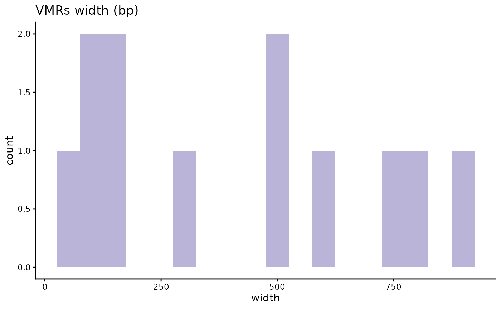

RAMEN
Erick I. Navarro-Delgado
The University of British Columbiaerick.navarrodelgado@bcchr.ca
RAMEN.RmdIntroduction
Regional Association of Methylome variability with the Exposome and geNome (RAMEN) is an R package whose goal is to integrate genomic, methylomic and exposomic data to model the contribution of genetics (G) and the environment (E) to DNA methylation (DNAme) variability. RAMEN identifies Variable Methylated Loci (VML) in microarray DNAme data and then, using genotype and environmental data, it identifies which of the following models better explains this variability in regions across the methylome:
| Model | Name | Abbreviation |
|---|---|---|
| DNAme ~ G + covars | Genetics | G |
| DNAme ~ E + covars | Environmental exposure | E |
| DNAme ~ G + E + covars | Additive | G+E |
| DNAme ~ G + E + G*E + covars | Interaction | GxE |
where G variables are represented by SNPs, E variables by environmental exposures, and where covars are concomitant variables (i.e. variables that are adjusted for in the model and not of interest in the study such as cell type proportion, age, etc.).
The main gene-environment interaction modeling pipeline is conducted though six core functions:
-
findVML()identifies Variable Methylated Regions (VML) in microarrays -
summarizeVML()summarizes the regional methylation state of each VML -
findCisSNPs()identifies the SNPs in cis of each VML -
selectVariables()conducts a LASSO-based variable selection strategy to identify potentially relevant cis SNPs and environmental variables -
lmGE()fits linear single-variable genetic (G) and environmental (E), and pairwise additive (G+E) and interaction (GxE) linear models and select the best explanatory model per VML. -
nullDistGE()simulates a delta R squared null distribution of G and E effects on DNAme variability. Useful for filtering out poor-performing best explanatory models selected by lmGE().
These functions are compatible with parallel computing, which is recommended due to the computationally intensive tasks conducted by the package.
In addition to the standard gene-environment interaction modeling pipeline, RAMEN can be useful for other DNAme analyses (see Variations to the standard workflow), such as reducing the tested sites in Epigenome Wide Association Studies, grouping DNAme probes into regions, identifying SNPs near a probe, etc.
Citation
If you use RAMEN for any of your analyses, please cite the following publication:
- Navarro-Delgado, E.I., Czamara, D., Edwards, K. et al. RAMEN: Dissecting individual, additive and interactive gene-environment contributions to DNA methylome variability in cord blood. Genome Biol 26, 421 (2025). https://doi.org/10.1186/s13059-025-03864-4
Gene-environment interaction analysis
The main purpose of the RAMEN package is to conduct a methylome-wide analysis to identify which model (G, E, G+E or GxE) better explains the variability across the genome. In this vignette, we will illustrate how to use the package.
To conduct this analysis, the following cleaned data sets (i.e. after quality and exploratory data analysis checks) from a cohort are required:
- DNAme data
- DNAme array manifest
- Genotyping data
- Genotype information
- Environmental exposure data
- Concomitant variables data
Once that we have that data, the overview of the pipeline is the following:

RAMEN pipeline
where:
- DNAme data is grouped into VML, and then the DNAme state per individual is summarized in each VML.
- Using the identified VML and the genomic information, we identify the SNPs in cis for each VML
- Both the cis SNPs and the exposome data are subjected to the variable selection stage
- The selected variables (Single Nucleotide Polymorphisms a and Environmental Exposures) enter the modelling stage, which outputs one single winning model per VML
- The thresholds obtained from the simulated null distribution are used to remove winning models which performance are likely to be due to chance.
In the following sections we will go through each of these steps and guide the user regarding the recommended parameters to use in each function of the package. For illustration purposes, we provide small toy data sets that do not intend to simulate the real biological phenomenon. These data sets are already available in the RAMEN package.
# Load the packages used throughout the vignette
library(RAMEN)
library(dplyr)
library(ggplot2)
library(tidyr)Identify VML and summarize their methylation state
The first step of the pipeline is to identify the Variable Methylated Loci(VML) in the data set. You might be wondering “What is a VML and why do we use them instead of DNAme levels from each CpG site?”. We use loci because it is well established that nearby CpG sites are very likely to share a similar DNAme profile and therefore work as functional units. Then, from a statistical point of view, testing separately proximal CpGs that are part of the same unit is redundant. On the other side, we use only variable regions because we are interested in the units that display a high level of variability; in other words, in non-variant sites there is no variability left to be explained by genetics or environment. So, in conclusion, we use VML to increase our power and reduce the multiple hypothesis testing burden by grouping probes that are likely to work as a biological unit, and by only focusing in the set of regions that are of interest of this study.
RAMEN identifies 2 categories of VML:
- Variably Methylated Region (VMR): Group of Highly Variable Probes that are proximal and correlated. Highly Variable Probes are defined as probes above a specific variance percentile threshold specified by the user (more information below). The proximity distance and pearson correlation threshold is specified by the user, and the defaults are 1 kilobase and 0.15 respectively. For guidance on which correlation threshold to use, we recommend checking the Supplementary Figure 1 of the CoMeBack R package (Gatev et al., 2020) where a simulation to empirically determine a default guidance specification for a correlation threshold parameter dependent on sample size is done.
- sparse Variably Methylated Probe (sVMP): Genomic loci that are composed of a Highly Variable Probe that has no nearby probes measured in the array (according to the distance parameter specified by the user). This category was created to take into account the characteristics of the DNAme microarray plataform, which covers non-homogenelously the genome. Due to the limited number of probes that can be measured in an array, this technology tends to interrogate the DNAme of genomic regions with a single probe. This is specially important for microarrays such as the EPIC array which has a high number of probes in regulatory regions that are represented by a single probe. Furthermore, there is empirical evidence that these probes are good representatives of the methylation state of their surroundings (Pidsley et al., 2016). By creating this category, we recover those informative HVPs that would otherwise be excluded from the analysis because of working with the canonical VMR definition in the context of a microarray.
The first step is to identify Variable Methylated
Loci(VML) using the RAMEN::findVML() function.
This function uses GenomicRanges::reduce() to group the regions, which
is strand-sensitive. In the Illumina microarrays, the MAPINFO for all
the probes is usually provided as for the + strand. If you are using
this array, we recommend to first convert the strand of all the probes
to “+”. For this step, we also recommend users to use M-values because
its use is more appropriate for statistical analyses (see Pan Du, et
al., 2010, BMC Bioinformatics).
Now, there are a couple of options that we provide to define Highly Variable Probes, which are the building blocks of VML. Let’s talk about two of the more important ones:
var_method
We need to chose a metric to quantify the variability of each probe across individuals. Different metrics exist for this purpose, each one with its own pros and cons. The user can chose between “MAD” (Median Absolute Deviation) and “variance”. We recommend using variance, as it captures cases where the spread is driven by a “low” frequency of individuals that display a substantially different pattern compared to the mean - which could be potentially caused by a genetic variant or environmental exposure. On the other hand, MAD is by nature more robust to outliers, which only picks up cases where there is a consistent variability across most individuals (also MAD has been historically used as a spread metric in GxE methylome-wide studies). In simpler terms, let’s say we have a study with 200 individuals. If in a probe, 110 individuals have similar DNAme levels, but 90 (45%) of them have different DNAme levels, the variance method could capture this scenario as a highly variable probe, while MAD will not. Let’s see an example:
set.seed(1)
sample <- c(
rep(0.2, 110),
sample(x = 0:10, size = 90, replace = TRUE) / 10
)
stats::var(sample)
#> [1] 0.06368819
stats::mad(sample)
#> [1] 0You can see in this simplified example that variability that is not shared by at least 50% of the individuals is ignored by MAD (i.e. it is 0), but not by variance (i.e. it is >0). Because we want to capture probes where the variability is driven by less than half of the individuals in the population, which could be interesting, var_method = “var” is the defualt.
You might also wonder, does it make that much of a difference? From empirical evidence, MAD and variance are expected to display a high correlation, so using MAD or variance will lead to a similar set of Highly Variable Probes. For instance, let’s check the relation between variance and MAD score in the CHILD dataset used in RAMEN’s first publication (see Navarro-Delgado EI, et al., 2025, Genome Biology).

MAD vs var relation
Additionally, if we were to take the top 10% of probes as highly variable, we found a 86% overlap between the two methods. So think of this more of a fine-tuning parameter rather than a game-changer.

HVPs with mad vs var
var_distribution
The second argument that we are going to discuss is var_distribution. There are two options that you can choose from: “all” and “ultrastable”. The “all” draws a variability distribution (MAD or variance) from all the probes in the array, and labels the top x% as HVPs (x is defined by the user with the var_threshold_percentile argument). So for example if we use a 90th percentile threshold, every probe with a variability score above the 90th percentile of the distribution (i.e. top 10%) will be labeled as Highly Variable Probe. This approach has been used in previous manuscripts, and allows the user to control the proportion of probes that will be labeled as HVPs.
On the other hand, the “ultrastable” option defines the variability
threshold using only the variability scores from probes that are located
in ultrastable regions. Ultrastable probes display a very low
variability across individuals independent of tissue and developmental
stage. Therefore, using these regions to define Highly Variable Probes
provides a more stable and comparable definition of HVPs across data
sets. When using the “ultrastable” option, we aim to remove all probes
that display the same variability behavior as the ultrastable probes
(which become our “null distribution”). So we recommend using a high the
var_threshold_percentile (default for this option is 99th percentile).
However, we don’t recommend using the max value (100th percentile) as
this can be very easily affected by outliers. The ultrastable probes
used in RAMEN were identified by Edgar et al. (2014) using
1,737 samples from 30 publicly available studies. These probes are
included in the RAMEN package as the ultrastable_cpgs data
set.
We recommend using the “ultrastable” option, as it provides a more objective and biologically meaningful definition of Highly Variable Probes. Using a fixed percentile threshold (e.g., 90th percentile) could lead to different definitions of HVPs across data sets, as the overall variability of DNAme can differ between cohorts. For instance, a cohort with a high level of environmental exposure variability might display a higher overall DNAme variability compared to a cohort with low environmental exposure variability. In this scenario, using a fixed percentile threshold will lead to both cohorts having the exact same number of HVPs, despite one of them being way more variable than the other, and a definition of HVPs unique to each data set.
Running RAMEN::findVML()
So, after covering all the basics and understanding how the function works, we can start our analysis! Let’s give it a try.
VML <- RAMEN::findVML(
methylation_data = RAMEN::test_methylation_data,
array_manifest = "IlluminaHumanMethylationEPICv1",
cor_threshold = 0,
var_method = "variance",
var_distribution = "ultrastable",
var_threshold_percentile = 0.99,
max_distance = 1000
)
#> Identifying Highly Variable Probes...
#> Setting options('download.file.method.GEOquery'='auto')
#> Setting options('GEOquery.inmemory.gpl'=FALSE)
#> Identifying sparse Variable Methylated Probes
#> Identifying Variable Methylated Regions...
#> Applying correlation filter to Variable Methylated Regions...
#> Warning: executing %dopar% sequentially: no parallel backend registered
# Take a look at the resulting object
dplyr::glimpse(VML$var_score_threshold) # check the specific threshold that was used to label HVPs
#> Named num 13.9
#> - attr(*, "names")= chr "99%"
head(VML$highly_variable_probes) # check the HVPs identified and their variability score
#> TargetID var_score
#> 1 cg06187584 17.05579
#> 2 cg09872009 14.79451
#> 3 cg05437132 15.17790
#> 4 cg00750806 17.14818
#> 5 cg12301579 14.00143
#> 6 cg17634528 19.95238
head(VML$VML) # Take a look at the identified VML data frame
#> VML_index type seqnames start end width strand probes n_VMPs
#> 1 VML1 VMR chr21 10990119 10990903 785 + cg098720.... 2
#> 2 VML2 VMR chr21 11109021 11109336 316 + cg007508.... 2
#> 3 VML3 VMR chr21 31799091 31799248 158 + cg245007.... 2
#> 4 VML4 VMR chr21 32715908 32716792 885 + cg164170.... 2
#> 5 VML5 VMR chr21 15955548 15955699 152 - cg147721.... 2
#> 6 VML6 VMR chr21 26573136 26573196 61 - cg111120.... 2
#> median_correlation
#> 1 0.6099180
#> 2 0.6261681
#> 3 0.7279154
#> 4 0.6932442
#> 5 0.8120654
#> 6 0.6173683Furthermore, we can see the following warning message in the chunk above:
#> Warning: executing %dopar% sequentially: no parallel backend registeredThis is printed in the screen just to warn us that
RAMEN::findVML() is running sequentially. RAMEN supports
parallel computing for increased speed, which is really important when
working with real data sets that tend to contain information from
thousands of probes. To do so, you have to set the parallel backend in
your R session BEFORE running the function (e.g.,
doParallel::registerDoParallel(4))). After that, the function
can be run normally. When working with big datasets, the parallel
backend might throw an error if you exceed the maximum allowed size of
globals exported for future expression. This can be fixed by increasing
the allowed size (e.g. running
options(future.globals.maxSize= +Inf))
Finally, we will extract the VML data frame, which we can use to produce plots and explore the results. This data frame will also be used for the following parts of the pipeline.
VML_df <- VML$VML
# Example of an epxloration plot
VML_df %>%
dplyr::filter(width > 1) %>% # Only plot VMRs, since sVMPs all have a lenght of 1
ggplot2::ggplot(aes(x = width)) +
ggplot2::geom_histogram(binwidth = 50, fill = "#BAB4D8") +
ggplot2::theme_classic() +
ggplot2::ggtitle("VMRs width (bp)")
Next, we want to summarize the DNAme level of each VML per
individual. To do this, we use RAMEN::summarizeVML(). For
sparse VMPs, there is nothing to summarize as we have one probe per
loci, so the DNAme level of the corresponding probe is returned. For
VMRs, the median DNAme level of all the probes in the region is returned
per individual as the representative value.
summarized_methyl_VML <- RAMEN::summarizeVML(
VML_df = VML_df,
methylation_data = test_methylation_data
)
# Look at the resulting object
summarized_methyl_VML[1:5, 1:5]
#> VML1 VML2 VML3 VML4 VML5
#> ID1 4.935942 2.853168 6.389600 9.017997 2.714379
#> ID2 1.879166 2.699689 7.790474 3.134218 2.223942
#> ID3 3.311818 1.078262 4.135771 2.864724 8.648046
#> ID4 6.558106 4.683173 6.153156 3.828411 1.448140
#> ID5 2.899969 4.930614 4.919235 3.664651 2.926548The result is a data frame of VML IDs as columns and individual IDs as rows.
Identify cis SNPs
After identifying the VML, we recommend to use only SNPs in cis of each loci, since genetic variants that associate with DNAme changes tend to be more abundant in the surroundings of the corresponding DNAme site (McClay et al., 2015). Also, the effect sizes of mQTLs (genetic variants associated with DNAme changes) are stronger in cis SNPs compared to trans SNPs. Then, by restricting the analysis to cis SNPs, we greatly reduce the number of variables while keeping most of the important ones.
There is not a clear consensus on how close a SNP has to be from a DNAme site to be considered cis - the distance threshold tend to go from few kb to 1 megabase. We recommend to use a 1 Mb window to cast a wide net and catch most potentially relevant SNPs.
VML_cis_snps <- RAMEN::findCisSNPs(
VML_df = VML_df,
genotype_information = RAMEN::test_genotype_information,
distance = 1e+06
)
#> Reminder: please make sure that the positions of the VML data frame and the ones in the genotype information are from the same genome build.
# Take a look at the result
head(VML_cis_snps)
#> VML_index type seqnames start end width strand probes n_VMPs
#> 1 VML1 VMR chr21 10990119 10990903 785 + cg098720.... 2
#> 2 VML2 VMR chr21 11109021 11109336 316 + cg007508.... 2
#> 3 VML3 VMR chr21 31799091 31799248 158 + cg245007.... 2
#> 4 VML4 VMR chr21 32715908 32716792 885 + cg164170.... 2
#> 5 VML5 VMR chr21 15955548 15955699 152 - cg147721.... 2
#> 6 VML6 VMR chr21 26573136 26573196 61 - cg111120.... 2
#> median_correlation surrounding_SNPs SNP
#> 1 0.6099180 1 21:10873....
#> 2 0.6261681 1 21:10873....
#> 3 0.7279154 659 21:30813....
#> 4 0.6932442 855 21:31718....
#> 5 0.8120654 726 21:14957....
#> 6 0.6173683 788 21:25582....We can see that the resulting data frame is almost exactly the same, but with two new columns (surrounding_SNPs and SNP) that contain information about how many SNPs were found in cis and what are their IDs according to the genotype data that we have.
It is important to highlight the columns probes and SNP contain lists as values. This structure is really important for the rest of the analysis, and columns containing lists will keep appearing in other function outputs. If you want to know the recommended way to save and load these objects, please check the Frequently Asked Questions.
We can also explore the resulting object through plots such as the following:
VML_cis_snps %>%
dplyr::mutate(surrounding_SNPs = case_when(
surrounding_SNPs > 3000 ~ 3000,
TRUE ~ surrounding_SNPs
)) %>%
ggplot2::ggplot(aes(x = surrounding_SNPs)) +
ggplot2::geom_density() +
ggplot2::facet_grid("type") +
ggplot2::xlab("Number of cis SNPs") +
ggplot2::theme_classic()
Disribution of SNPs in cis of VML.
# Check the average number of cis snps in out VML data set
mean(VML_cis_snps$surrounding_SNPs)
#> [1] 771.3644Conduct variable selection on genome and exposome variables
The following stage in the pipeline is to screen the available
variables in our environmental and cis SNPs data sets to
identify the potentially relevant ones. This is achieved with the
RAMEN::selectVariables() function. This function uses a
data-driven approach based on LASSO, which is an embedded variable
selection method commonly used in machine learning.
In a nutshell, LASSO penalizes models that are more complex (i.e., that contain more variables) in favor of simpler models (i.e. that contain less variables), but not at the expense of reducing predictive power. Using LASSO’s variable screening property (i.e., with high probability, the LASSO estimated model includes the substantial covariates and drops the redundant ones) this function is intended to select genotype and environmental variables in each VML with potential relevance in the presence of the user-specified concomitant variables (which are known DNAme confounders such as age, cell type proportion, etc.). For more information about the method, we encourage the users to read the documentation of the function, and for further information about LASSO we direct readers to Bühlmann and Van de Geer, 2011.
Overall, conducting our variable selection strategy reduces the downstream computational time and improves the modeling performance by:
- Reducing the space of variables that will be used to fit models in the following stage (G/E/G+E/GxE model fitting and comparison)
- Removing redundant variables, which are highly expected in genetic and environmental data sets with a high number of variables
- Limiting the interactions terms to scenarios where both the G and E main effects were selected to be potentially relevant, which can be think of as an interaction variable selection using a weak hierarchy
- Using LASSO, a method with good variable selection performance and scalability
Please make sure that your data has no NAs, since the LASSO implementation we use in RAMEN does not support missing values, and that all values are numeric. If your data has missing values, consider handling them.
selected_variables <- RAMEN::selectVariables(
VML_df = VML_cis_snps,
genotype_matrix = RAMEN::test_genotype_matrix,
environmental_matrix = RAMEN::test_environmental_matrix,
covariates = RAMEN::test_covariates,
summarized_methyl_VML = summarized_methyl_VML,
seed = 1
)
#> Loading required package: foreach
#> Loading required package: rngtoolsSince LASSO makes use of Random Number Generation, setting a seed is highly encouraged for result’s reproducibility using the seed argument. As a note, setting a seed inside of this function modifies the seed globally (which is R’s default behavior).
The output of RAMEN::selectVariables() is an object with
the VML index, and the G and E variables selected for each VML.
dplyr::glimpse(selected_variables)
#> Rows: 118
#> Columns: 3
#> $ VML_index <chr> "VML1", "VML2", "VML3", "VML4", "VML5", "VML6", "VML7",…
#> $ selected_genot <list> "21:10873592:G:A", "21:10873592:G:A", "21:32782704:T:G…
#> $ selected_env <list> <"E43", "E3", "E5", "E7", "E24", "E25", "E28", "E35", …We can see how using RAMEN::selectVariables() reduces
the number of variables (originally 100 environmental variables and
771.3644068 SNPs per VML on average as seen in Figure
@ref(fig:cissnps)).
selected_variables %>%
dplyr::left_join(
VML_cis_snps %>%
select(c(VML_index, type)),
by = "VML_index"
) %>%
dplyr::transmute(
VML_index = VML_index,
type = type,
Genome = lengths(selected_genot),
Exposome = lengths(selected_env)
) %>%
tidyr::pivot_longer(-c(VML_index, type)) %>%
dplyr::rename(
group = name,
variables = value
) %>%
ggplot2::ggplot(aes(x = type, y = variables)) +
ggplot2::geom_violin() +
ggplot2::geom_boxplot(width = 0.1, outlier.shape = NA) +
ggplot2::facet_wrap(~group) +
ggplot2::ggtitle("Selected variables") +
ggplot2::theme_classic()
Number of G and E selected variables.
It is also expected in real data to have VML where no SNP and/or no environmental variables were selected, since not all the DNAme sites in the genome are expected to show an association with the genetic variation or environmental exposures data sets that are captured in a study. The proportion of VML under these scenarios will depend on the data sets.
Author’s note about variables interpretation
LASSO variable selection is not consistent when there is multicollinearity in the data (i.e., correlation between variables), which is expected due to the high amount of G and E variables that are present in studies of this kind. This means that if you were to run LASSO several times, and two variables were to be highly correlated, the method would select one and drop the other one at random. This is not a problem with the pipeline because the main conclusion per VML is whether the DNAme is better explained by G and/or E components. As an example, if a VML is better explained by SNP1 and SNP2, which are both highly correlated one with the other, LASSO will randomly pick SNP1 OR SNP2 (because they are relevant but they provide redundant information); if we were to fit a model with SNP1 or SNP2 in the following stage, the winning model would still be G. In other words, the main goal of the pipeline is to know whether the VML’s DNAme is better explained by G and/or E. The user is therefore warned to be cautious not to over-interpret the individual selected variables. Selected variables might be used as hypothesis generators of associations, keeping in mind that the selected variable might be representing other variables in the data set that provide similar information.
Identify the best explanatory model (G/E/G+E/GxE) per VML
Fit and compare the models and select the best one
Now that we have selected the list of potentially relevant G and E
variables, we will fit the models mentioned in Table
@ref(tab:modelstable) using the RAMEN::lmGE() function.
This function fits, for each VML, G and E models with all of the
variables selected, as well as all their possible pairwise combinations
of G+E and GxE.
After fitting this model, the best model per group (group = G, E, G+E or GxE) is selected using Akaike Information Criterion (AIC) or Bayesian Information Criterion (BIC). We recommend using AIC because BIC assumes that the true model is in the set of compared models. Since this function fits models with individual variables, and we assume that DNAme variability is more likely to be influenced by more than one single SNP/environmental exposure at a time, we hypothesize that in most cases, the true model will not be in the set of compared models. Also, AIC excels in situations where all models in the model space are “incorrect”, and AIC is preferentially used in cases where the true underlying function is unknown and our selected model could belong to a very large class of functions where the relationship could be pretty complex. It is worth mentioning however that, both metrics tend to pick the same model in a large number of scenarios. We suggest the users to read Arijit Chakrabarti & Jayanta K. Ghosh, 2011 for further information about the difference between these metrics. After selecting the best model per group (G,E,G+E pr GxE), the model with the lowest AIC or BIC will be declared as the winning model.
Additionally, RAMEN::lmGE() conducts a variance
decomposition analysis, so that the relative R2 contribution of each of
the variables of interest (G, E and GxE) is reported. This decomposition
is done using the relaimpo R
package, using the Lindeman, Merenda and Gold (lmg) method, which is
based on the heuristic approach of averaging the relative R contribution
of each variable over all input orders in the linear model.
lmge_res <- RAMEN::lmGE(
selected_variables = selected_variables,
summarized_methyl_VML = summarized_methyl_VML,
genotype_matrix = RAMEN::test_genotype_matrix,
environmental_matrix = RAMEN::test_environmental_matrix,
covariates = RAMEN::test_covariates,
model_selection = "AIC"
)
# Check the output
dplyr::glimpse(lmge_res)
#> Rows: 118
#> Columns: 13
#> $ VML_index <chr> "VML1", "VML2", "VML3", "VML4", "VML5", "VML6", "VML7"…
#> $ model_group <chr> "G+E", "G+E", "GxE", "E", "G+E", "G+E", "G+E", "E", "G…
#> $ variables <list> <"21:10873592:G:A", "E43">, <"21:10873592:G:A", "E43"…
#> $ tot_r_squared <dbl> 0.5527507, 0.5115764, 0.5680092, 0.3008107, 0.7548714,…
#> $ g_r_squared <dbl> 0.1996156, 0.2095645, 0.2717880, NA, 0.4246781, 0.2317…
#> $ e_r_squared <dbl> 0.34206198, 0.27143559, 0.20396557, 0.22824073, 0.2232…
#> $ gxe_r_squared <dbl> NA, NA, 0.06543422, NA, NA, NA, NA, NA, NA, NA, 0.2017…
#> $ AIC <dbl> 144.6841, 148.7250, 148.7964, 156.8403, 131.9394, 141.…
#> $ second_winner <chr> "GxE", "GxE", "G+E", NA, "GxE", "GxE", "GxE", NA, "GxE…
#> $ delta_aic <dbl> 1.04970268, 1.34557464, 0.90726931, NA, 1.52627239, 1.…
#> $ delta_r_squared <dbl> -0.0139452928, -0.0105391888, 0.0439594231, NA, -0.003…
#> $ basal_AIC <dbl> 164.4893, 165.2905, 167.1613, 163.3152, 166.7269, 158.…
#> $ basal_rsquared <dbl> 0.011073059, 0.030576374, 0.026821375, 0.072569961, 0.…The output of RAMEN::lmGE() is a data frame with the
following 13 columns:
- VML_index: The index of the respective VML
- model_group: The selected winning model (G, E, G+E or GxE). For the VML that had no variables selected and therefore no model could be fitted, this column will have “B” (baseline), which indicates that the best model was the basal one (i.e., no G or E variables improved the model since the variable selection stage); these VML will have NA in all of the following columns.
- variables: The variable(s) that are present in the winning model (excluding the covariates, which are included in all the models)
- tot_r_squared: total R squared of the winning model
- g_r_squared: Estimated R2 allocated to the G component in the winning model, if applicable
- e_r_squared: Estimated R2 allocated to the E in the winning model, if applicable.
- gxe_r_squared: Estimated R2 allocated to the interaction in the winning model (GxE), if applicable.
- AIC/BIC: AIC or BIC metric from the best model in each VML (depending on the option specified in the argument model_selection).
- second_winner: The second group that possesses the next best model after the winning one (i.e., G, E, G+E or GxE). This column may have NA if the variables in selected_variables correspond only to one group (G or E), so that there is no other model groups to compare to.
- delta_aic/delta_bic: The difference of AIC or BIC (depending on the option specified in the argument model_selection) of the winning model and the best model from the second_winner group (i.e., G, E, G+E or GxE). This column may have NA if the variables in selected_variables correspond only to one group (G or E), so that there is no other groups to compare to.
- delta_r_squared: The R2 of the winning model - R2 of the second winner model. This column may have NA if the variables in selected_variables correspond only to one group (G or E), so that there is no other groups to compare to.
- basal_AIC/basal_BIC: AIC or BIC of the basal model (i.e., model fitted only with the concomitant variables specified in the covariates argument)
- basal_rsquared: The R2 of the basal model (i.e., model fitted only with the concomitant variables specified in the covariates argument)
Remove poor performing winning models
The core pipeline from the RAMEN package identifies the best
explanatory model per VML. However, despite these models being winners
in comparison to models including any other G/E variable(s) in the
dataset, some winning models might perform no better than what we would
expect by chance. Therefore, The last step of the pipeline is to compute
a null distribution to remove the best models that are likely to be so
by chance. To do so, we use RAMEN::nullDistGE().
The goal of RAMEN::nullDistGE() is to create a
distribution of how much the R2 increases when we include the SNP or
Environmentl Exposure (EE) or SNPxEE variables when G and E
having no associations with DNAme. This distribution that we
obtain when there is no effect (null distribution) is obtained through
shuffling the G and E variables in a given dataset, and conducting the
variable selection and G/E model selection. That way, we can simulate
how much additional variance would be explained by the models defined as
winners by the RAMEN methodology in a scenario where the G and E
associations with DNAme are pure noise. This distribution can be then
used to filter out winning models in our original dataset that do not
add more to the explained variance of the basal model than what shuffled
data do.
For clarification, please note that in this vignette when we refer to SNPxEE, we are referring to the interaction term that is present in the the interaction model (i.e. interaction variable in the GxE model).
Under the assumption that after adjusting for the concomitant
variables all VML across the genome share a minimum increment of
explained variance, we can pool the delta R squared values from all VML
to create a null distribution taking advantage of the high number of VML
in the dataset. This assumption decreases significantly the number of
permutations required to create a null distribution and reduces the
computational time. For further information on how this is done please
read the RAMEN paper (Navarro-Delgado EI et al., 2025).
RAMEN::nullDistGE() shuffles the G and E variables in the
dataset and runs findVML, selectVariables() and lmGE(). This is repeated
as many times as indicated in the permutations parameter.
# Compute the null distribution
null_dist <- RAMEN::nullDistGE(
VML_df = VML_cis_snps,
genotype_matrix = RAMEN::test_genotype_matrix,
environmental_matrix = RAMEN::test_environmental_matrix,
summarized_methyl_VML = summarized_methyl_VML,
permutations = 5,
covariates = RAMEN::test_covariates,
seed = 1,
model_selection = "AIC"
)
#> Starting permutation 1 of 5
#> Starting variable selection of permutation 1 of 5
#> Starting lmGE in permutation 1 of 5
#> Wrapping up permutation 1 of 5
#> Starting permutation 2 of 5
#> Starting variable selection of permutation 2 of 5
#> Starting lmGE in permutation 2 of 5
#> Wrapping up permutation 2 of 5
#> Starting permutation 3 of 5
#> Starting variable selection of permutation 3 of 5
#> Starting lmGE in permutation 3 of 5
#> Wrapping up permutation 3 of 5
#> Starting permutation 4 of 5
#> Starting variable selection of permutation 4 of 5
#> Starting lmGE in permutation 4 of 5
#> Wrapping up permutation 4 of 5
#> Starting permutation 5 of 5
#> Starting variable selection of permutation 5 of 5
#> Starting lmGE in permutation 5 of 5
#> Wrapping up permutation 5 of 5
# Take a look at the object
head(null_dist)
#> VML_index tot_r_squared model_group R2_difference AIC_difference permutation
#> 1 VML1 0.2606017 E 0.2495286 157.7547 1
#> 2 VML2 0.2976822 E 0.2671059 157.5905 1
#> 3 VML3 0.7167819 G+E 0.6899605 134.1040 1
#> 4 VML5 0.6303330 G+E 0.5234351 144.1571 1
#> 5 VML6 0.4951590 G 0.3368695 145.4537 1
#> 6 VML8 0.5316458 G 0.4508688 145.0785 1The output is a data frame where the most useful column for our purpose is R2_difference, which corresponds to the increase in R squared obtained by including the SNP/EE variable(s) from the best explanatory model (i.e., the R squared difference between the chosen final model and the model only with the concomitant variables specified in covariates; tot_r_squared - basal_rsquared in the lmGE output)
We recommend to use two different thresholds for the winning models depending of whether they are marginal (G or E) or joint models (G+E or GxE). The reason for this is that they have different R2_difference distributions. E and G models have a lower mean R2_difference because they have a single shuffled term in the model (SNP or E). In comparison, joint models have a higher mean R2_difference because they have two or three shuffled terms (SNP, E and SNP*E), which just by chance increases their probability of having a higher R2_difference.
# See the distribution of R2_difference across different winning models
null_dist %>%
drop_na() %>% # Remove Basal models from the results, where there is no difference between chosen model and basal model
ggplot2::ggplot(aes(x = R2_difference)) +
ggplot2::geom_histogram() +
ggplot2::facet_grid("model_group") +
ggplot2::xlab("R2 difference") +
ggplot2::theme_classic()
#> `stat_bin()` using `bins = 30`. Pick better value `binwidth`.R2 difference (winner - basal) in a suffled data set.
We suggest using the 95th percentile of those distributions as a threshold to remove bad performing winning models found in our observed data.
# Get a cutoff of the 95th percentile of the null distribution for single and joint models
cutoff_single <- quantile(
null_dist %>%
filter(model_group %in% c("G", "E")) %>%
pull(R2_difference),
0.95
)
cutoff_joint <- quantile(
null_dist %>%
filter(model_group %in% c("G+E", "GxE")) %>%
pull(R2_difference),
0.95
)
# Get a data frame with the final results results
final_res <- lmge_res %>%
dplyr::mutate(
r2_difference_basal = tot_r_squared - basal_rsquared,
# Label if the best explanatory model passes its corresponding threshold
pass_cutoff_threshold = case_when(
model_group %in% c("G", "E") ~ r2_difference_basal > cutoff_single,
model_group %in% c("G+E", "GxE") ~ r2_difference_basal > cutoff_joint
),
# Label the final model group, replacing bad performing winning models with "B" (basal)
model_group = case_when(
pass_cutoff_threshold ~ model_group,
TRUE ~ "B"
)
) %>%
dplyr::select(-pass_cutoff_threshold) # Drop temporary column
# Keep only VML that have informative models with out data
filtered_res <- final_res %>%
dplyr::filter(!model_group == "B") # Filter based on the cutoff threshold
# Check the VML with informative models
dplyr::glimpse(filtered_res)
#> Rows: 4
#> Columns: 14
#> $ VML_index <chr> "VML48", "VML60", "VML72", "VML106"
#> $ model_group <chr> "G+E", "E", "GxE", "GxE"
#> $ variables <list> <"21:27797178:A:T", "E35">, "E43", <"21:15834113:T…
#> $ tot_r_squared <dbl> 0.6852111, 0.5044772, 0.7293201, 0.7362242
#> $ g_r_squared <dbl> 0.5909553, NA, 0.1189250, 0.2212840
#> $ e_r_squared <dbl> 0.09091405, 0.48759879, 0.42360869, 0.36187195
#> $ gxe_r_squared <dbl> NA, NA, 0.1609023, 0.1515714
#> $ AIC <dbl> 139.0928, 151.7701, 145.2265, 137.0652
#> $ second_winner <chr> "GxE", NA, "G+E", "G+E"
#> $ delta_aic <dbl> 1.753135, NA, 4.641825, 1.166166
#> $ delta_r_squared <dbl> -0.002579712, NA, 0.067078581, 0.029360694
#> $ basal_AIC <dbl> 169.6680, 170.3237, 177.6443, 170.9999
#> $ basal_rsquared <dbl> 0.003341714, 0.016878434, 0.025884145, 0.001496833
#> $ r2_difference_basal <dbl> 0.6818694, 0.4875988, 0.7034360, 0.7347274We can see that the final data set in this example dropped almost all
of the VMRs we had (only 4/118 survived!).
This is something expected (and desired) since we are working with a toy
data coming from random sampling, so we should end up with almost no
good-performing chosen models.
We recommend the users of the package to include the number of VML
with Basal models (i.e. where we could not find a conclusive best model
in the final results either because no variables were selected with
RAMEN::selectVariables() or because they did not pass the
R2_difference threshold obtained with
RAMEN::nullDistGE()).
# Plot final results
final_res %>%
dplyr::group_by(model_group) %>%
dplyr::summarise(count = n()) %>%
ggplot2::ggplot(aes(x = model_group, y = count)) +
ggplot2::geom_col() +
ggplot2::xlab("Best explanatory model") +
ggplot2::ylab("VML") +
ggplot2::theme_classic()
Variable Methylated Loci best explanatory models
So, we can see that for this toy example, we got the following results:
- VML better explained by a G model: 0
- VML better explained by a E model: 1
- VML better explained by a G+E model: 0
- VML better explained by a GxE model: 3
- VML with no conclusive explanatory model: 114
And that’s it! We finished the tutorial. Now go grab some yummy food, we deserve it!
Author’s note about model interpretation
For model simplicity, each winning model have a single EE and/or SNP variable (and its interaction term when applicable). That means that in a scenario where a given VML is under the influence of 2 or more EEs or SNPs, only the one that better explains the VMR’s DNAme alone will be selected. In other words, if a VMR in reality is influenced by e.g. folate intake and smoking, and we have information about both environmental exposures, the best model (E) will have only folate intake (in case that is the variable that better explains DNAme variability in that region alone). So, interpreting this as the VMR not being potentially under the influence of smoking might not be correct. We recommend the user to check the total R2 of the winning model to explore the remaining variance that is not explained by the winning model.
We also stress that interpretation of individual variables should be done with caution and used as exploration and research hypothesis generation. Please see Author’s note about variables interpretation) where we advice against over-interpretation of the selected variables; the same logic applies to the variables present in the winning models.
Variations to the standard workflow
Besides using RAMEN for completing the analysis mentioned above, the outputs of the package’s function can help users in other DNAme analyses, such as:
- Reduction of tests prior to an EWAS or differential methylation
analysis with
RAMEN::findVML()(i.e., conducting the analysis on identified VML which 1) reduces redundant tests by grouping nearby correlated CpGs, and 2) avoids tests in non-variant regions). This can help to reduce the multiple hypothesis testing burden. - Summarize a DNAme region of interest with
RAMEN::summarizeVML() - Easily conduct variable selection in high-dimensional data sets to
identify potentially relevant variables from one or two independent data
sets with
RAMEN::selectVariables(). - Fit additive and interaction models given two sets of variables of
interest (not limited to G and E) and select the best explanatory model
for DNAme data with
RAMEN::selectVariables()andRAMEN::lmGE()(e.g. exploring the interaction between two environmental dimensions and their contribution to DNAme variability, or epistasis effects). - Quickly identify SNPs in cis of CpG probes with
RAMEN::findCisSNPs() - Get the median correlation of probes in regions of interest (with
RAMEN::medCorVML()).
Frequently Asked Questions
How can I save the RAMEN data frames that have columns with lists as observations?
Saving the data frames produced by RAMEN might seem difficult because it has lists as observations in several columns, which is not supported by some read/write functions. We suggest two options:
- Use
fwrite()andfread()from the data.table package (recommended because of time and storage space).
# Example for saving and reading selected_variables object
data.table::fwrite(selected_variables, file = "path/selected_variables.csv")
# Read the csv file and make lists the elements in the required columns
selected_variables <- fread("path/selected_variables.csv", data.table = FALSE) %>%
mutate(
selected_genot = str_split(selected_genot, pattern = "\\|"), # fwrite saves lists as strings separated by |, so we need to splut them
selected_env = str_split(selected_env, pattern = "\\|"),
VMR_index = as.character(VMR_index)
)- Save files as .rds
Session info
sessionInfo()
#> R version 4.5.2 (2025-10-31)
#> Platform: x86_64-pc-linux-gnu
#> Running under: Ubuntu 24.04.3 LTS
#>
#> Matrix products: default
#> BLAS: /usr/lib/x86_64-linux-gnu/openblas-pthread/libblas.so.3
#> LAPACK: /usr/lib/x86_64-linux-gnu/openblas-pthread/libopenblasp-r0.3.26.so; LAPACK version 3.12.0
#>
#> locale:
#> [1] LC_CTYPE=C.UTF-8 LC_NUMERIC=C LC_TIME=C.UTF-8
#> [4] LC_COLLATE=C.UTF-8 LC_MONETARY=C.UTF-8 LC_MESSAGES=C.UTF-8
#> [7] LC_PAPER=C.UTF-8 LC_NAME=C LC_ADDRESS=C
#> [10] LC_TELEPHONE=C LC_MEASUREMENT=C.UTF-8 LC_IDENTIFICATION=C
#>
#> time zone: UTC
#> tzcode source: system (glibc)
#>
#> attached base packages:
#> [1] stats graphics grDevices utils datasets methods base
#>
#> other attached packages:
#> [1] doRNG_1.8.6.2 rngtools_1.5.2 foreach_1.5.2 tidyr_1.3.1
#> [5] ggplot2_4.0.1 dplyr_1.1.4 RAMEN_1.0.0.9003 knitr_1.50
#> [9] BiocStyle_2.38.0
#>
#> loaded via a namespace (and not attached):
#> [1] RColorBrewer_1.1-3
#> [2] shape_1.4.6.1
#> [3] jsonlite_2.0.0
#> [4] magrittr_2.0.4
#> [5] GenomicFeatures_1.62.0
#> [6] farver_2.1.2
#> [7] rmarkdown_2.30
#> [8] fs_1.6.6
#> [9] BiocIO_1.20.0
#> [10] ragg_1.5.0
#> [11] vctrs_0.6.5
#> [12] multtest_2.66.0
#> [13] memoise_2.0.1
#> [14] Rsamtools_2.26.0
#> [15] DelayedMatrixStats_1.32.0
#> [16] RCurl_1.98-1.17
#> [17] askpass_1.2.1
#> [18] htmltools_0.5.9
#> [19] S4Arrays_1.10.1
#> [20] curl_7.0.0
#> [21] survey_4.4-8
#> [22] Rhdf5lib_1.32.0
#> [23] SparseArray_1.10.6
#> [24] rhdf5_2.54.1
#> [25] sass_0.4.10
#> [26] nor1mix_1.3-3
#> [27] bslib_0.9.0
#> [28] desc_1.4.3
#> [29] plyr_1.8.9
#> [30] cachem_1.1.0
#> [31] GenomicAlignments_1.46.0
#> [32] lifecycle_1.0.4
#> [33] IlluminaHumanMethylationEPICanno.ilm10b4.hg19_0.6.0
#> [34] iterators_1.0.14
#> [35] pkgconfig_2.0.3
#> [36] Matrix_1.7-4
#> [37] R6_2.6.1
#> [38] fastmap_1.2.0
#> [39] MatrixGenerics_1.22.0
#> [40] digest_0.6.39
#> [41] siggenes_1.84.0
#> [42] reshape_0.8.10
#> [43] AnnotationDbi_1.72.0
#> [44] S4Vectors_0.48.0
#> [45] textshaping_1.0.4
#> [46] GenomicRanges_1.62.0
#> [47] RSQLite_2.4.5
#> [48] base64_2.0.2
#> [49] labeling_0.4.3
#> [50] httr_1.4.7
#> [51] abind_1.4-8
#> [52] compiler_4.5.2
#> [53] beanplot_1.3.1
#> [54] bit64_4.6.0-1
#> [55] withr_3.0.2
#> [56] S7_0.2.1
#> [57] BiocParallel_1.44.0
#> [58] DBI_1.2.3
#> [59] HDF5Array_1.38.0
#> [60] MASS_7.3-65
#> [61] openssl_2.3.4
#> [62] DelayedArray_0.36.0
#> [63] corpcor_1.6.10
#> [64] rjson_0.2.23
#> [65] tools_4.5.2
#> [66] rentrez_1.2.4
#> [67] glue_1.8.0
#> [68] quadprog_1.5-8
#> [69] h5mread_1.2.1
#> [70] restfulr_0.0.16
#> [71] nlme_3.1-168
#> [72] rhdf5filters_1.22.0
#> [73] grid_4.5.2
#> [74] generics_0.1.4
#> [75] gtable_0.3.6
#> [76] tzdb_0.5.0
#> [77] preprocessCore_1.72.0
#> [78] data.table_1.17.8
#> [79] hms_1.1.4
#> [80] xml2_1.5.1
#> [81] XVector_0.50.0
#> [82] BiocGenerics_0.56.0
#> [83] stringr_1.6.0
#> [84] pillar_1.11.1
#> [85] limma_3.66.0
#> [86] genefilter_1.92.0
#> [87] mitools_2.4
#> [88] splines_4.5.2
#> [89] lattice_0.22-7
#> [90] survival_3.8-3
#> [91] rtracklayer_1.70.0
#> [92] bit_4.6.0
#> [93] GEOquery_2.78.0
#> [94] annotate_1.88.0
#> [95] tidyselect_1.2.1
#> [96] locfit_1.5-9.12
#> [97] Biostrings_2.78.0
#> [98] bookdown_0.46
#> [99] IRanges_2.44.0
#> [100] Seqinfo_1.0.0
#> [101] SummarizedExperiment_1.40.0
#> [102] stats4_4.5.2
#> [103] xfun_0.54
#> [104] Biobase_2.70.0
#> [105] scrime_1.3.5
#> [106] statmod_1.5.1
#> [107] matrixStats_1.5.0
#> [108] relaimpo_2.2-7
#> [109] stringi_1.8.7
#> [110] boot_1.3-32
#> [111] yaml_2.3.12
#> [112] evaluate_1.0.5
#> [113] codetools_0.2-20
#> [114] cigarillo_1.0.0
#> [115] tibble_3.3.0
#> [116] minfi_1.56.0
#> [117] BiocManager_1.30.27
#> [118] cli_3.6.5
#> [119] bumphunter_1.52.0
#> [120] xtable_1.8-4
#> [121] systemfonts_1.3.1
#> [122] jquerylib_0.1.4
#> [123] Rcpp_1.1.0
#> [124] png_0.1-8
#> [125] XML_3.99-0.20
#> [126] parallel_4.5.2
#> [127] pkgdown_2.2.0
#> [128] readr_2.1.6
#> [129] blob_1.2.4
#> [130] mclust_6.1.2
#> [131] sparseMatrixStats_1.22.0
#> [132] bitops_1.0-9
#> [133] glmnet_4.1-10
#> [134] scales_1.4.0
#> [135] illuminaio_0.52.0
#> [136] purrr_1.2.0
#> [137] crayon_1.5.3
#> [138] rlang_1.1.6
#> [139] KEGGREST_1.50.0